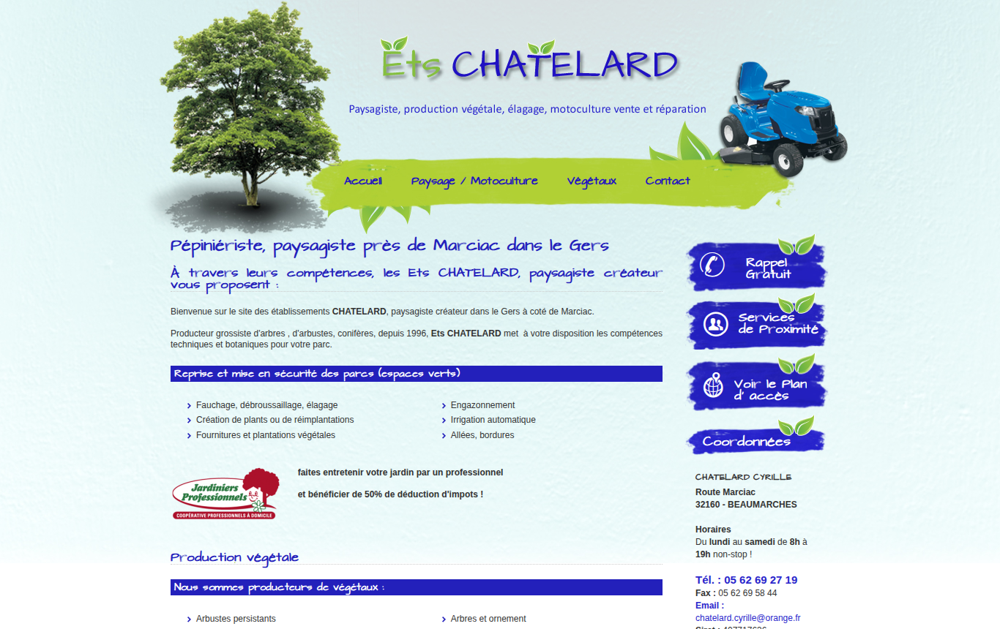

Sur ordinateur, l'en-tête associe un arbre et un tracteur-tondeuse détourés sur un fond bleu pâle texturé, avec un menu posé sur une trace de pinceau vert anis : c'est une mise en page typique des années 2010.
Votre site aujourd'hui, et ce qu'il pourrait être

Ce que nous avons relevé
Les titres, le menu et les boutons de la colonne de droite (« Rappel Gratuit », « Services de Proximité », « Voir le Plan d'accès ») utilisent une police manuscrite arrondie, peu lisible, en bleu roi sur fond bleu clair.
La page d'accueil se présente comme une longue liste de textes à puces sous des bandeaux bleu foncé. Il n'y a aucune photo de vos réalisations ni de votre pépinière, alors que votre métier est très visuel.
Ce que change la refonte
Mobile d'abord
Bouton d'appel toujours visible, chargement en moins de 2 secondes, lecture sans zoom.
Trouvé sur Google
Données structurées LocalBusiness, page par service, cohérence avec votre fiche Google.
Recommandé par les IA
FAQ, horaires, zone et avis lisibles par ChatGPT, Gemini et Google AI Overviews, qui citent les sites clairs.
Sans frais de départ
Création, hébergement, maintenance et mises à jour inclus : 80 € HT par mois, engagement 12 mois.